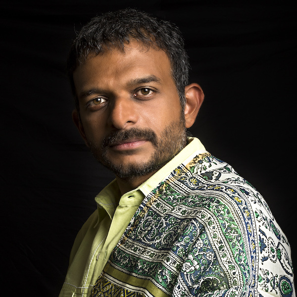

Keynote Speaker

TM Krishna / Karnatik Musician, Author & Activist
2022-12-06 | 09:00 (Asia/Calcutta)
Indian art music continues to evolve in current performance practice, while staying within the framework provided by some of the immutable axiomatic concepts that define the music culture. The changes that lead the evolution of the music culture are guided by practitioners and influenced by the evolving socio-cultural, socio-political or performance and aesthetic considerations. In this talk, we focus on the evolution of Indian art music from the perspective of performance and aesthetics, highlighting some important milestones around the melodic and rhythmic systems in Indian art music. Focusing on recent developments and our own influences on performance practice and aesthetics, we discuss our effort and approaches to create more inclusive roles in music composition and performance. We further aim to provide concrete examples and formulations of the abstractions in current performance and aesthetics. We propose thoughts and ideas that can help current MIR formulations and solutions to go beyond the limiting assumptions based on current music performance practices and (often rigid) structures, and focus on the music abstractions that are more fundamental to our understanding, appreciation and analysis of Indian art music.
Bio
TM Krishna, is one of the pre-eminent vocalists in the rigorous Karnatik tradition of India's classical music. As a public intellectual, Krishna speaks and writes about issues affecting the human condition and about matters cultural. As a vocalist, he has made path-breaking innovations in both the style and substance of his concerts. His award-winning book, A Southern Music – The Karnatik Story, published by Harper Collins in 2013 was a first-of-its-kind philosophical, aesthetic and socio-political exploration of Karnatik music. TM Krishna has partnered with individuals and collectives working at the intersections of social change, a new politics for contemporary India, a fresh new imagining of the wider universe of the Arts. In 2016, TM Krishna received the prestigious Ramon Magsaysay Award in recognition of "his forceful commitment as artist and advocate to art’s power to heal India’s deep social divisions".